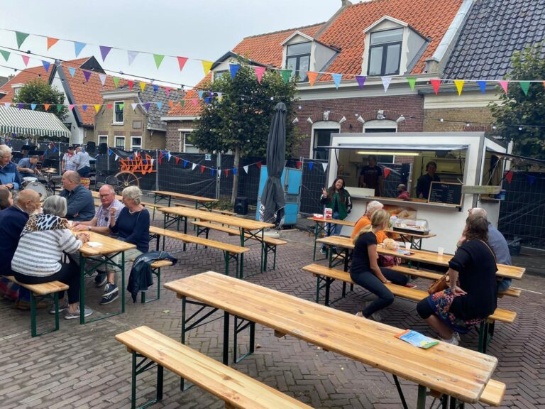
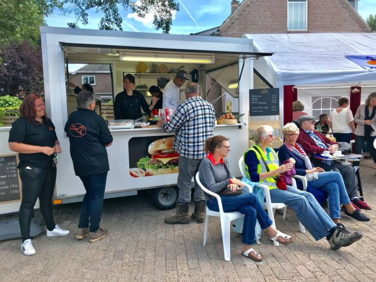

Van hobby naar droom - Het verhaal van Mary-Ann
Op de parkeerplaats bij de supermarkt in Piershil verkoopt Mary-Ann Mitschek vanuit haar kraampje lekkernijen naar Filipijns recept. Wat begon als een hobby is uitgegroeid tot een passie die ze graag deelt met iedereen.
"Ik volg mijn hart. Ik hou gewoon van eten. Maar nog mooier vind ik eten delen. Háár eten."
Mary-Ann heeft eigenlijk een voltijdbaan in een bakkerij, maar op vrijdag en zaterdag verkoopt ze haar eigen voedsel. "Als hobby er bij", zoals ze het zelf noemt.
"De reacties van mensen als ze mijn eten proeven, die waardering, daar doe ik het allemaal voor."
Een eigen restaurant! "De Filipijnse keuken is niet zo heel bekend in Nederland. Het is leuk om mensen het eten te laten leren kennen. Ja, een eigen restaurant lijkt me helemaal geweldig."

Na anderhalf jaar van aanvragen kan Mary-Ann eindelijk legaal de harten veroveren met haar eigen foodkraam.
"Een jaar of twee terug zag ik dit witte kraampje op Marktplaats staan en toen dacht ik meteen: die moet ik hebben. Superleuk natuurlijk", vertelt ze enthousiast.
Honderden loempia's per weekend
Hooguit paar dagen in vriezer

"Ik vind andere loempia's ook lekker, hoor. Maar meestal proef je alleen maar wat groenten en niet echt het vlees."
"Ik doe mijn best het vlees ook goed naar voren te laten komen. Ik wil ook wel dat mensen echt waar krijgen voor hun geld."
- Mary-Ann Mitschek
"Je ziet dat het voor veel levendigheid zorgt op het plein. Zoiets heeft grote impact op het dorp."
"In Piershil hebben we niet zo heel veel, behalve een snackbar. Ik vind het ook gewoon heel gezellig, zo'n kraam. Het gevoel van de markt is terug - fijn een babbeltje maken met mensen. En het is ook goed voor mijn Nederlands!", lacht Mary-Ann.
Elke vrijdag en zaterdag bij de Spar in Piershil